Intermediate frames of the Unitree G1 walking the reconstructed Varanasi market, and the full pipeline that produced them as a flowchart. Frames were pulled from the saved M4 videos on the Mac.
See also the overall progress report.
From m4_final_crowd_walk.mp4: the splat street, the real people re-inserted as cutouts at their tracked ground positions, and the G1 rendered by Isaac from the same camera. Green boxes are the people the robot can perceive: inside its field of view and not hidden behind someone nearer. The inset minimap shows the robot (red) moving down the street. Numbers are read from each frame's own overlay.
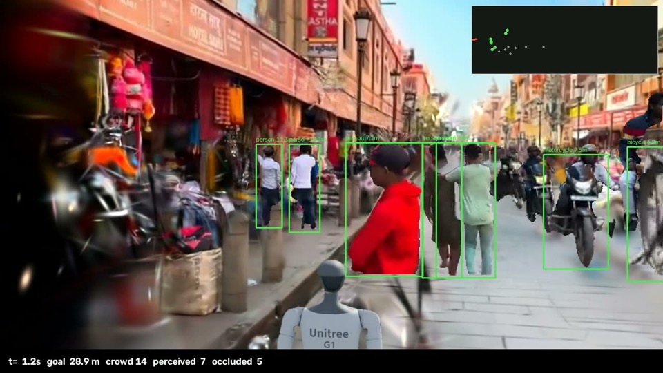
Densest moment. Seven people in view, five more hidden behind them, a motorbike on the right.
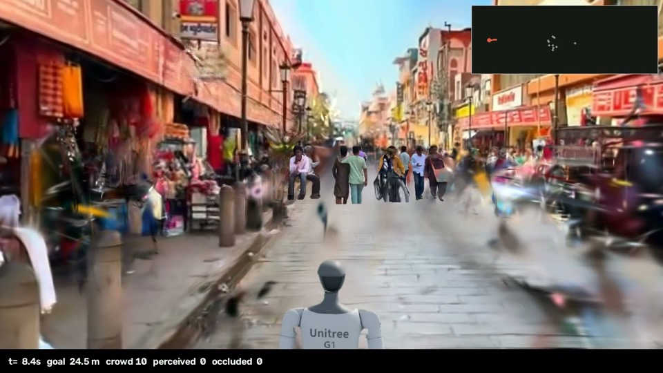
The near group has passed. Nobody is inside the perception range, so the robot walks straight.
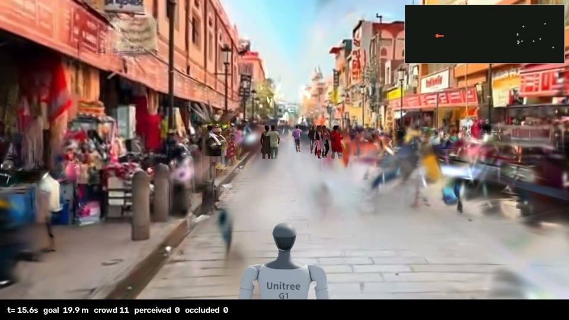
The crowd is far down the street. The smear on the road is the part of the ground no camera frame ever saw.
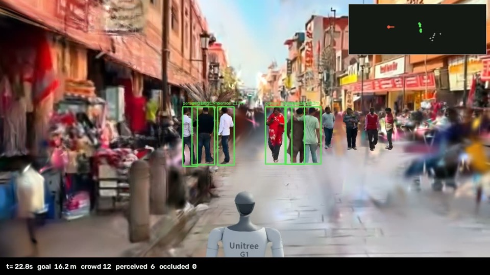
Two groups come into range, one on each side of the street.
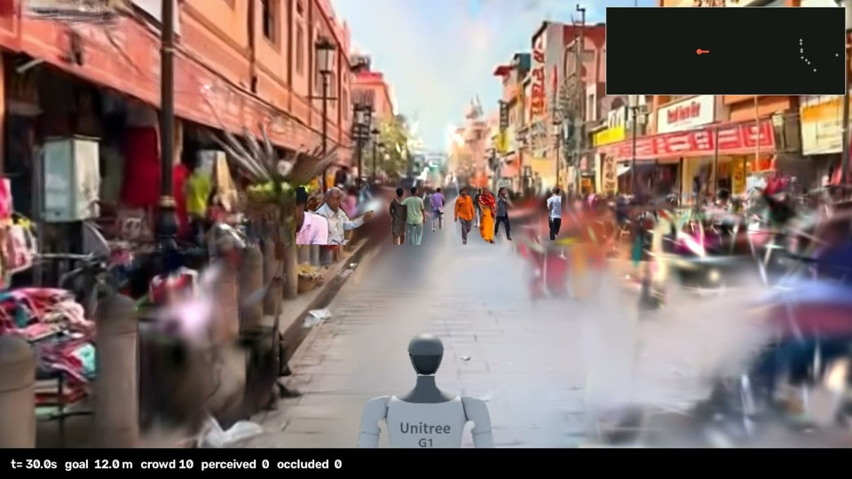
The groups are behind it. The street ahead is clear again.
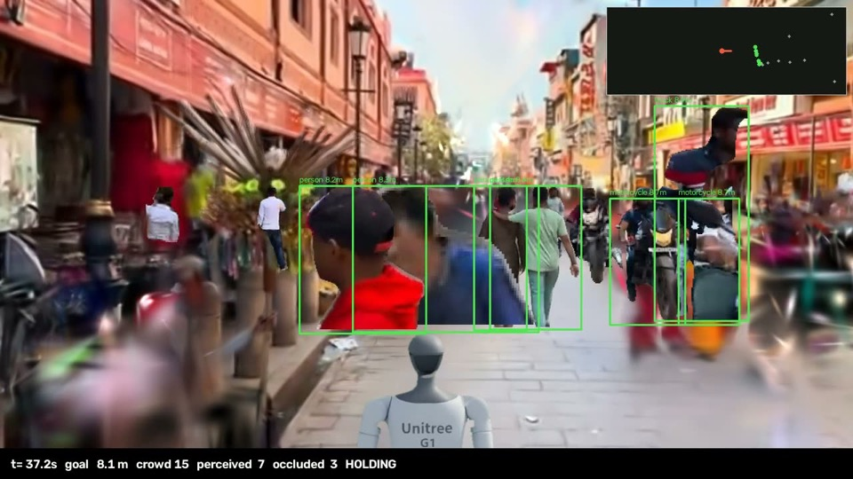
A line of people crosses directly ahead. The time-to-collision rule sees them closing and holds the robot in place instead of pushing through.
Progress bars show the share of the ~29.8 m start-to-goal distance already covered.
From m4_g1_walk_sidebyside.mp4. Left: the G1 in Isaac Sim on the flat ground-plane collider. That is the entire physics world, because the splat is never a collider. Right: the same pose rendered in the Varanasi splat.
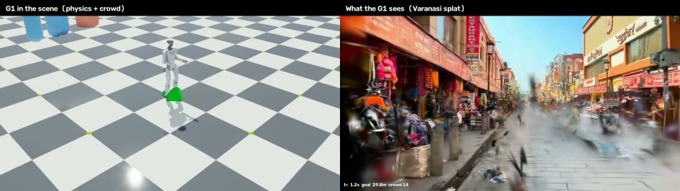
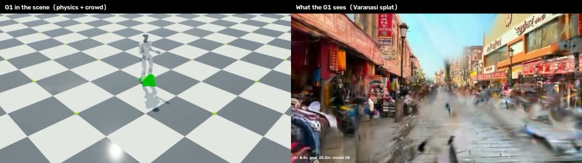
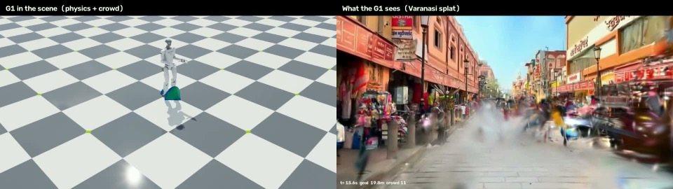
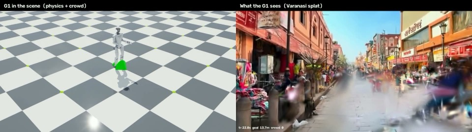
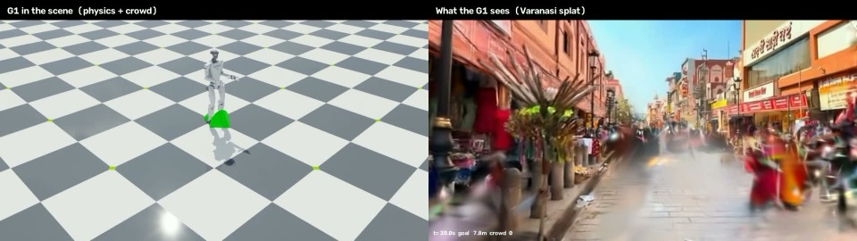
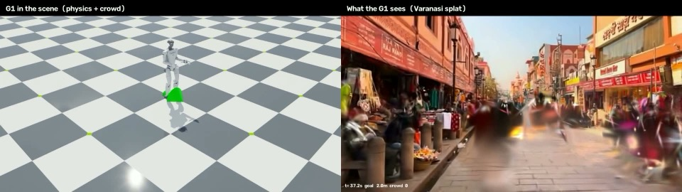
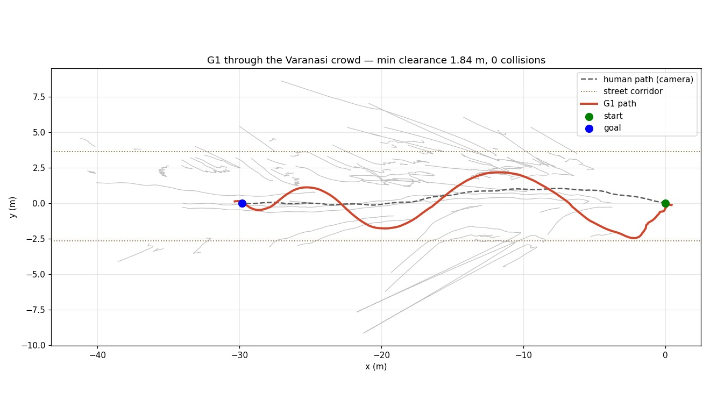
| Controller | Success | Collision rate ↓ | Left street | Final goal dist. ↓ | Mean min clearance |
|---|---|---|---|---|---|
| Learned (PPO) | 56.7% | 44.2% | 0% | 2.99 m | 0.89 m |
| Rule-based (time to collision) | 51.7% | 50.0% | 0% | 3.23 m | 0.66 m |
These are short training-environment episodes, harder than the single demo run. Both controllers still collide in almost half of them, so crowd navigation is far from solved. Run 8's zero collisions is one episode, not a rate.
Step numbers follow the script docstrings, so the scene and crowd lanes interleave: step 4 (tracking) runs between steps 3 and 5.